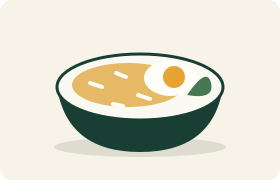

What should you eat today?
A simple meal picker helping students choose what to eat by budget and taste.
Lunch should not take longer to choose than to enjoy. Start with a budget and a taste preference, and let a small collection of meal ideas help you decide.

Three steps to one less decision
- Choose your budget. Keep it open, or set a limit of ¥15 or ¥25.
- Choose your taste. Select non-spicy, spicy, or either.
- Get an idea. Pick a random matching meal. Try again if you want another suggestion.
A small menu, a simple choice
Explore rice bowls, noodles, dumplings and hotpot ideas. You can see every option in the collection before asking the picker to choose.
All prices are project examples, not current restaurant prices. This is an idea generator, not an ordering service.